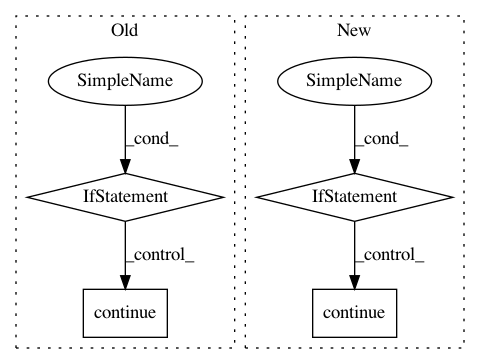

5e357b6dbb7ce3fcb945cd88b45156115e51faf7,PyInstaller/depend/analysis.py,PyiModuleGraph,add_hiddenimports,#PyiModuleGraph#,598
Before Change
// Analyze the script"s hidden imports (named on the command line)
for modnm in module_list:
logger.debug("Hidden import: %s" % modnm)
if self.findNode(modnm) is not None:
logger.debug("Hidden import %r already found", modnm)
continue
logger.info("Analyzing hidden import %r", modnm)
// ModuleGraph throws ImportError if import not found
try :
node = self.import_hook(modnm)
After Change
// Analyze the script"s hidden imports (named on the command line)
for modnm in module_list:
node = self.findNode(modnm)
if node is not None:
logger.debug("Hidden import %r already found", modnm)
else:
logger.info("Analyzing hidden import %r", modnm)
// ModuleGraph throws ImportError if import not found
try:
nodes = self.import_hook(modnm)
assert len(nodes) == 1
node = nodes[0]
except ImportError:
logger.error("Hidden import %r not found", modnm)
continue
// Create references from the top script to the hidden import,
// even if found otherwise. Don"t waste time checking whether it
// as actually added by this (test-) script.
self.createReference(self._top_script_node, node)
def get_co_using_ctypes(self):
In pattern: SUPERPATTERN
Frequency: 3
Non-data size: 4
Instances
Project Name: pyinstaller/pyinstaller
Commit Name: 5e357b6dbb7ce3fcb945cd88b45156115e51faf7
Time: 2019-08-15
Author: h.goebel@crazy-compilers.com
File Name: PyInstaller/depend/analysis.py
Class Name: PyiModuleGraph
Method Name: add_hiddenimports
Project Name: akkana/scripts
Commit Name: 9a88eac5a23150345337d62e83621316cf2d986f
Time: 2019-09-21
Author: akkana@shallowsky.com
File Name: censusdata.py
Class Name:
Method Name: codesFromZipFile
Project Name: lovit/soynlp
Commit Name: d74f06bee2d1415a4a66c291de1899a5d0dae828
Time: 2019-06-06
Author: soy.lovit@gmail.com
File Name: soynlp/word/_word.py
Class Name: WordExtractor
Method Name: extract